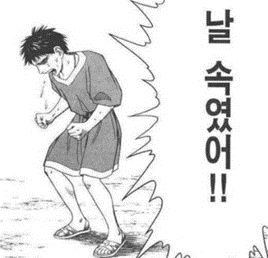

다들 한번쯤 자전거를 배울 때 절대로 자전거에서 손을 놓지 않겠다던 부모님의 말에 속은 경험이 있으신가요?
(참고로 저는 자전거를 배울 당시 의심과 겁이 많아 결국 현재까지도 자전거를 못 탄다는…..ㅎㅎ)
한국에서는 대여 자전거가 있을 정도로 쉽게 자전거를 타고 다니는 사람들을 볼 수
있는데요.
솔직히 저는 한국이 자전거를 타기에 좋은 곳이 아니라고 생각합니다.
뭐 자전거 도로가 그렇게 많은 것도 아니고 솔직히 좁은 인도를 자전거가 빠르게
지나가거나 횡단보도에서 사람들 사이를 자전거를 타고 지날때 정말 위험하다고
생각하거든요..
심지어 한국의 자전거 사용 인구가 늘어나는 추세에 자전거 사고 수가 무려 1만
3000이 넘는다고 합니다..
(ㅁ..뭣?! 1만 3000????!!)
그.래.서. 너무 놀란 나머지 제가 직접 이 문제에 대한 해결 방법을 찾아봤습니다.
여러가지 해결방안이 나오더라구요?
자전거 도로 확장하기, 자전거 벌금 제도 활성화하기 등등..
그중에서도! 제일 관심이 갔던 해결방안은
독일의 자전거 면허와 자전거 교육 의무 제도인데요
솔직히 이거 보고 이렇게 까지 할 필요가 있나 싶기도 하고
자전거 면허는 도대체 어떻게 단계를 거치는 건지 궁금해서 한번 찾아봤습니다!
독일의 경우 자전거 사용이 거의 뭐 한국에서 자동차를 타는 것처럼
일반적이고 자동차보다 많이 사용하는 이동수단이라고 합니다.
(놀라지 말아요.. 자전거 주차장입니다..ㅎㅎ)
여기서 신기한 점은!
차도 바로 옆에 자전거 도로가 있거나
자전거와 자동차가 같이 사용할 수 있는 도로가 있다고 해요!
(신기하지 않나요??)
이렇게 자전거를 대중적으로 사용하는 만큼
자전거를 잘 알고 다룰 수 있어야겠죠?
- 두발 자전거 Laufrad -
독일은 한국의 세발, 네발 자전거와 비슷하게 발로 밀며 가는 자전거 Laufrad를
아이가 아장아장 걸을 수 있게 됐을 때 접하게 해주는데요.
3살, 4살쯤에는 보조바퀴가 달린 자전거를 타고 만 6살쯤에는 보조바퀴 없이
자전거를 탄다고 합니다.
(음.. 뭔가 배우는 나이나 속도가 한국보다 빠른 것 같지 않나요?)
독일은 초등학교 3학년부터 교과과정에 자전거 수업을 듣고
3학년 1학기 때는 자전거 실기 교육을 받고
안전을 위해 헬멧을 쓰고 형광색 안전조끼를 입으며
자전거 수업이 있는 날 전날엔 모두 자전거를 가져와 달라고 공지를 한다고 합니다.
- 수업시간에 사용하는 자전거 면허 필기 문제집 -
학교에서 필기 수업도 하면서 집에서 이어서 공부할 수 있게 필기 문제집과 문제를 풀 수 있는 사이트를 학교에서 알려준다고 해요.
또 3학년 2학기엔 실전 실기연습을 위한 지도를 주고 그 구간 안에는 신호등, 로터리, STOP 도로 표지판이 있으며 부모님과 함께 자전거 연습을 한다고 합니다.
4학년 2학기인 4월에는 반 전체가 필기 시험을 보러가고 5월 초에 Fahrrad prüfung 자전거 실기 시험을 봅니다
자전거 실기 시험은 10단계로 이루어지는데요.
1번째 출발, 헬멧이 눈썹 위에서 이마가 덮이도록 착용하고 반드시 버클을 채워야
함.
2번째 똑바로 가기, 페달은 발 앞부분으로 밟고 라인을 밟거나 길을 이탈하면 실점.
3단계 횡단보도 건너기, 자전거에서 내려 좌, 우를 살피고 오른쪽으로 걸어서
건너기.
4단계 지그재그로 주행하기, 장애물이 넘어지면 안되고 한 번 이상 발이 땅에
닿으면 실점.
5~6단계 우회전, 좌회전 수신호 하기, 어느 방향으로 가려고 하는지 뒤에 오는
자동차나 보행자에게 알리기.
7단계 뒤쪽 확인하기, 뒤쪽에서 표지판을 보여주면 그에 맞는 행동을 해야 함.
ex: 정지 표지판이 보이면 정지, 직진 표지판에 경우 정지하지 않고 코스 진행.
8단계 언덕 오르내리기, 언덕을 오르고 내린 후 정지선에서 정확히 정지해야 함.
9단계 종이컵 옮기기, 땅에 발이 닿지 않은 상태에 막대에 있는 종이컵을 다른
막대로 옮겨야 함.
10단계 도착, 정지 수신호를 하며 자전거를 정지시켜야 함.
(헥헥;; 아이고 힘들어)
(와… 생각보다 더 복잡하고 면허 따기가 어려울 것 같네요…)
이렇게 독일의 자전거 문화를 보니까 한국도 이를 벤치마킹 한다면
정말 좋은 자전거 문화를 만들 수 있을 것 같아요!
(물론 독일처럼 더 자전거 이용이 증가해야 되겠지만요?)
(이렇게 다치지 말고)
우리 모두 자전거를 행복하게 이용할 수 있으면 좋겠습니다!
다들 조심히 타세요!
그럼 이만! (찡긋)